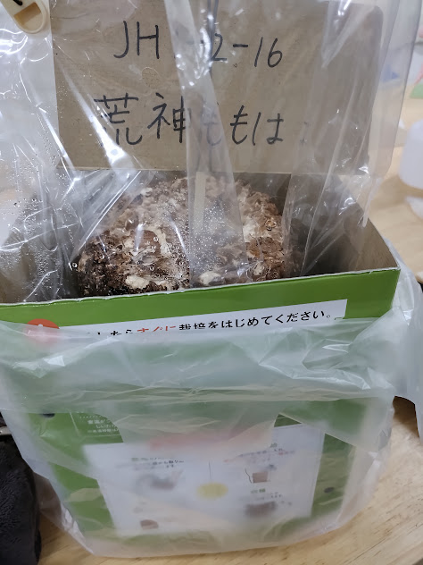
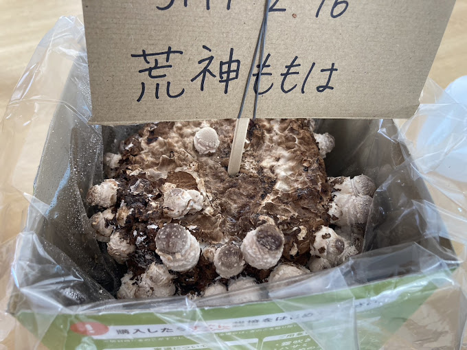
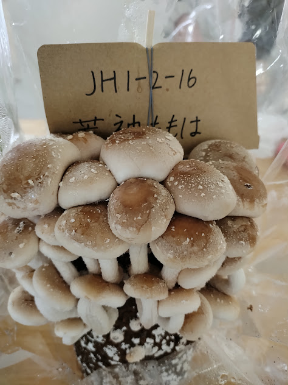
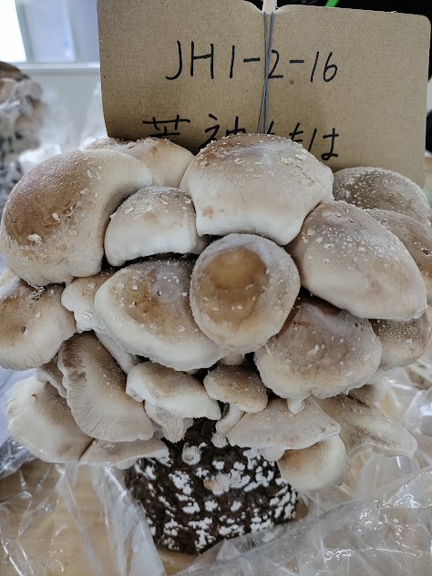
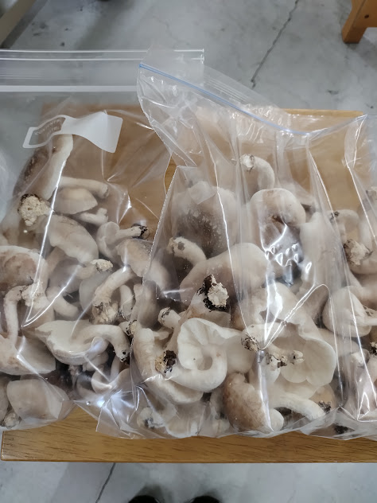
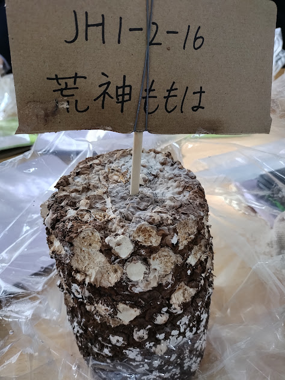
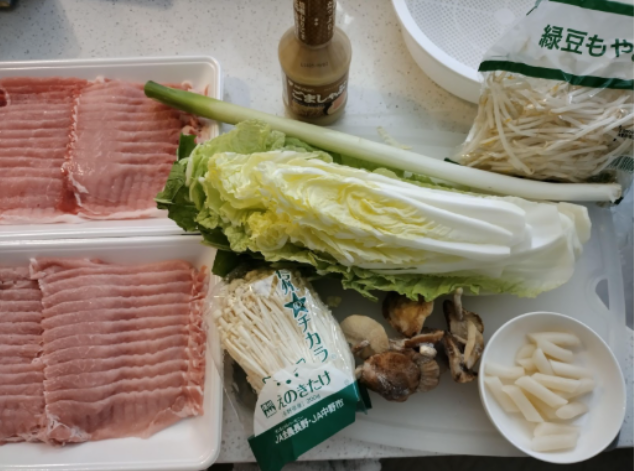
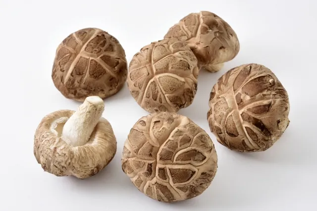
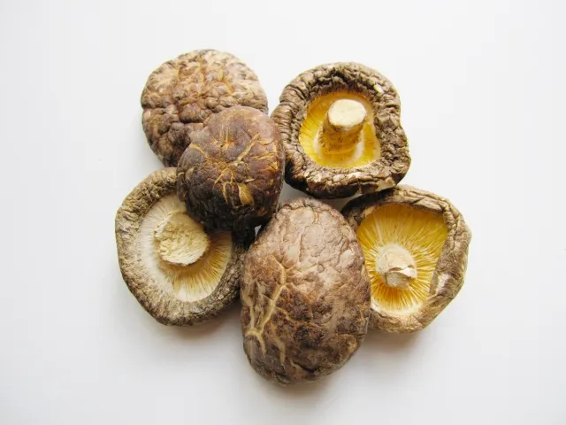
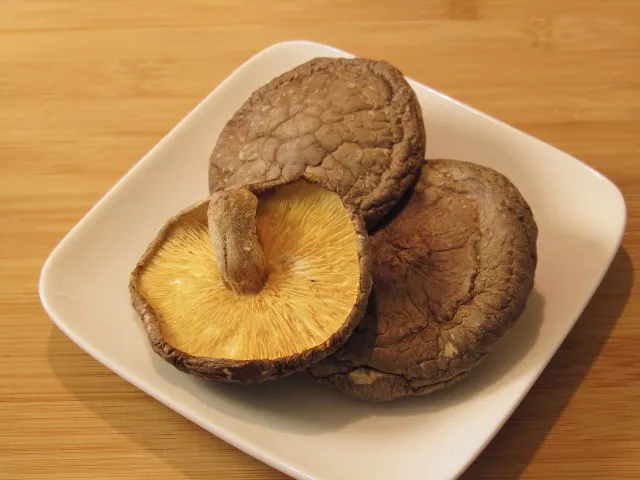

11/6 1日目

菌床を爪楊枝で刺し、水を染み込ませました。
11/8 3日目

少しずつ育ってきました。
11/11 6日目

3日間でとても大きくなりました。
11/13 8日目

傘の裏にあるヒダの膜が切れました。
収穫


想像以上にたくさん収穫できました。
採れたしいたけは、しゃぶしゃぶに使いました。
【材料】
豚肉・白菜・ネギ・もやし・豆腐・しいたけ・トッポギ・白だし

【作り方】
1. 具材を切る（しいたけは飾り切り）
2. 白だしと水を加熱する
3. 具材に火を通す
しいたけは主に「冬菇（どんこ）」「香菇（こうこ）」「香信（こうしん）」の３種類があります。
これは品種が違うわけではなく、しいたけの見た目によって付ける名前が変わります。
しいたけの傘の開き具合、厚みや大きさ、傘の模様や色などを見て決めます。
|  | 冬菇（どんこ） 大きくて肉厚。傘の部分が開ききっておらず、巻き込みが強いので丸みを帯びている。 |
|  | 香菇（こうこ） 冬菇と香信の中間の大きさ。 傘の部分も冬菇ほど巻き込みが強くなく、かと言って開ききってもいない一般的な状態。 厚みも程よくあり、よく目にするしいたけ。 |
|  | 香信（こうしん） 平たい形をしている。 傘の部分が開ききっており、厚みもほどんどない。 |